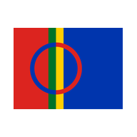

Ladataan sanakirjaa…
Ensimmäisellä kerralla ladataan noin 40 Mt. Sen jälkeen sanakirja toimii myös ilman verkkoyhteyttä.
Bures boahtin! – Tervetuloa
Kokeile:

Ensimmäisellä kerralla ladataan noin 40 Mt. Sen jälkeen sanakirja toimii myös ilman verkkoyhteyttä.
Kokeile: